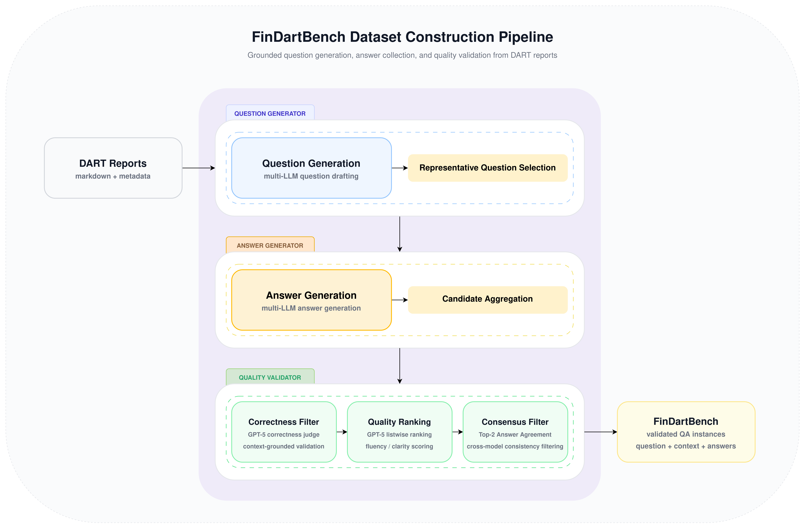
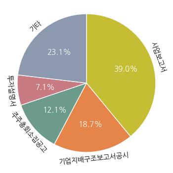

FinDartBench is a Korean financial question answering benchmark built from disclosure documents in the Financial Supervisory Service’s electronic disclosure system (DART). Rather than simply generating synthetic QA pairs from filings, it aims to construct a curated dataset suitable for practical evaluation. We employ a multi-stage pipeline that combines document-structure-aware preprocessing, multi-LLM question and answer generation, question deduplication, and staged answer validation. Candidate answers are progressively filtered using LLM judges for factual correctness, Korean language quality, and cross-model agreement. FinDartBench is built from DART filings of 10 companies and contains 14,444 QA instances, with an average of 2.73 validated reference answer candidates per question. The resulting dataset provides a practical benchmark for evaluating Korean financial document understanding on real-world disclosure documents.
Large language models have recently been applied to a wide range of financial tasks, including document summarization, question answering, and research assistance. However, publicly available benchmarks for systematically evaluating Korean financial document understanding remain limited. In particular, disclosure documents from listed companies involve an intricate combination of numerical information, tables, temporal information, regulatory context, and corporate decision-making background, making it difficult for general-purpose QA benchmarks alone to adequately assess real-world financial document understanding.
To address this limitation, we propose FinDartBench, a Korean financial QA benchmark built from disclosure documents in the Financial Supervisory Service’s electronic disclosure system (DART). FinDartBench is an evaluation dataset constructed by automatically generating questions and answers from source filings, followed by deduplication and reference answer refinement. The core objective of this work is not simply to generate synthetic QA at scale, but to construct highly reliable questions and reference answers suitable for actual evaluation.
The construction pipeline of FinDartBench consists of document-structure-preserving preprocessing, multi-LLM-based question and answer generation, duplicate question removal, and multi-stage quality filtering using LLM judges. We also design an additional verification step that checks agreement among top answer candidates, further improving the reliability of reference answers. Through this design, we aim to reduce the bias of relying on a single generation model while jointly controlling factuality and expression quality, both of which are critical in disclosure-document QA.
The contributions of this work are as follows.
1. Construction of FinDartBench, a Korean financial QA benchmark derived from DART filings.
2. Development of an end-to-end pipeline for question generation, deduplication, and reference answer refinement.
3. Design of a multi-stage LLM judge framework that performs factuality verification, Korean quality evaluation, and consensus-based validation.
Benchmarks for financial document understanding have primarily evolved around financial-document question answering and broader financial evaluation frameworks. FinQA, TAT-QA, and ConvFinQA are representative datasets for evaluating numerical reasoning and document understanding based on financial reports and tables. More recently, DocFinQA expanded the evaluation scope to settings with full-document context, while FinanceBench improved practical relevance through open-book QA over real public-company filings and reports. In addition, FinBen introduced a comprehensive benchmark covering diverse financial tasks, including QA. However, most of these benchmarks are built around English financial documents, which makes them limited for directly evaluating Korean disclosure document understanding due to linguistic and institutional differences.
Research on Korean financial benchmarks is still at an early stage. Won presented a public leaderboard and benchmark operation case study for evaluating Korean financial LLMs, highlighting the need for a Korean financial NLP evaluation framework. That said, such work focuses on broadly measuring model performance across the financial domain, and therefore differs in both objective and design from a document-centered QA benchmark grounded in actual Korean corporate disclosure documents. In particular, Korean DART filings differ from English-language financial documents in disclosure systems, document formats, and writing conventions, which makes a dedicated dataset necessary.
| Benchmark | Language | Source Documents | Reference Answer Construction |
|---|---|---|---|
| FinQA | English | Financial reports | Human-annotated |
| TAT-QA | English | Financial reports (text + tables) | Human-annotated |
| ConvFinQA | English | Financial reports | Human-annotated |
| DocFinQA | English | Financial documents with full-document context | Human-annotated |
| FinanceBench | English | Public company filings and reports | Human-annotated |
| FinDartBench (Ours) | Korean | Korean DART filings | LLM-curated |
Table 1. Comparison of FinDartBench with prior financial document QA benchmarks
Table 1 highlights the key differences between FinDartBench and prior financial QA benchmarks. While existing datasets rely on English financial documents and human-annotated answers, FinDartBench is built from Korean DART filings and constructs reference answers through a multi-LLM-based refinement pipeline. This distinction is important in two aspects: it enables evaluation on Korean disclosure documents that reflect real-world regulatory and reporting practices, and it demonstrates a practical alternative to fully manual annotation by combining large-scale automatic generation with structured quality control.
In addition to benchmark construction, research on the LLM-as-a-Judge paradigm provides a foundation for automatic evaluation and filtering. G-Eval showed that GPT-4-based evaluation can achieve high correlation with human judgments, and Judging LLM-as-a-Judge with MT-Bench and Chatbot Arena demonstrated the effectiveness of strong judge models in comparative evaluation settings. In addition, Prometheus proposed an open-source judge model capable of fine-grained rubric-based evaluation. However, more recent work has reported biases such as position bias (Investigating Position Bias in LLM-as-a-Judge), suggesting that single-stage evaluation may be unreliable.
Motivated by these findings, we incorporate a multi-stage LLM-judge framework into our pipeline, separating factuality verification from Korean language quality evaluation and introducing consensus-based validation to improve robustness.
FinDartBench is a Korean financial QA benchmark built from disclosure documents collected from the Financial Supervisory Service’s electronic disclosure system (OpenDART). In this work, we used approximately 200 disclosure documents as source data, from which evaluation questions and reference answer candidates were automatically generated and progressively refined. The core objective of the construction process is not simply to mass-produce synthetic QA, but to build a highly reliable question–answer set suitable for practical evaluation.
The full construction process consists of three stages. First, the source disclosure documents are preprocessed, question candidates are generated for each document chunk, and semantically similar questions are consolidated into a representative question set. Next, multiple LLMs are used to generate answer candidates for each representative question. Finally, the generated answer candidates are sequentially filtered through factuality verification, Korean language quality evaluation, and consensus verification to finalize the reference answer set. Question and answer generation were carried out in a consistent manner using a vLLM-based serving environment with an OpenAI-compatible interface.
The source data consists of disclosure documents from 10 companies: LG Electronics, SK Telecom, Samsung Electronics, Hyundai Motor, Korea Electric Power Corporation, SK hynix, KB Kookmin Bank, HMM, Kia, and Dunamu. The document types include not only periodic disclosures such as annual and quarterly reports, but also various event-driven disclosures such as material event reports, corporate governance reports, and voluntary disclosures. As a result, FinDartBench is designed to evaluate not only financial numerical QA, but also understanding of diverse financial documents involving corporate governance, capital policy, related-party transactions, and shareholder meeting agenda items.
The overall construction pipeline is summarized in Figure 1.

Figure 1. FinDartBench dataset construction pipeline
The Question Generator is the stage that produces question candidates from source disclosure documents and constructs a representative question set through deduplication. The goal of this stage is to secure a diverse set of questions grounded in document context while consolidating semantically equivalent questions into stable evaluation units. To achieve this, we first divide disclosure documents into input units suitable for question generation, then use multiple LLMs to generate structured QA candidates, and finally derive representative questions through similar-question clustering. For question generation and clustering, we used models such as Mistral-Large-3, GLM-4.7, and DeepSeek-V3.2-Exp.
In the preprocessing stage, company name and document-type metadata were extracted from document titles, and the body text was segmented according to the title hierarchy. Long sections were further split to remain within the maximum length constraint, while tables were processed in a way that preserved header and row structure to minimize information loss. In addition, when only a heading remained in isolation, it was re-merged with adjacent paragraphs to reduce semantic fragmentation. Each resulting chunk was augmented with the company name, document type, title information, chunk index, and total number of chunks, and then used as the basic unit for downstream question generation and traceability. Let the set of preprocessed document chunks be defined as $\mathcal{S} = \{ s_1, s_2, \dots, s_M \}$.
Question generation was performed using prompts that included few-shot examples. Given each chunk as input, the generation models were prompted to output a structured JSON list of QA pairs containing question_type, question, and answer. Here, the answer is not the final reference answer, but rather an initial draft used to check whether the generated question is appropriately grounded in the actual context. Based on this process, the initial question set is defined as
where $\mathrm{Gen}_Q$ denotes the multi-LLM-based question generation process.
To remove redundancy, the generated questions are clustered using their corresponding chunk context as auxiliary information. An LLM groups semantically identical or highly similar questions into clusters. Let the resulting cluster set be
$$ \mathcal{C}_Q = \{ C_1, C_2, \dots, C_K \}, \quad \bigcup_{k=1}^{K} C_k = \mathcal{Q}_0, \quad C_i \cap C_j = \emptyset, \quad i \neq j. $$For each cluster $C_k$, a representative question is generated as $q_k^{*} = \mathrm{Gen}_{\mathrm{repr}}(C_k)$, where $\mathrm{Gen}_{\mathrm{repr}}$ denotes the representative-question generation function that produces a single question capturing the core semantics of the cluster. The final representative question set is then defined as
$$ \mathcal{Q}^{*} = \{ q_1^{*}, q_2^{*}, \dots, q_K^{*} \}. $$Each representative question $q_k^{*}$ is paired with its corresponding source chunk $s_k \in \mathcal{S}$, inherited from the original generated-question instances in cluster $C_k$.
Through this process, the number of questions is reduced from 29,810 to 21,377, corresponding to a compression rate of 28.29%. The resulting representative question--context pairs are then used as input to the Answer Generator.
The Answer Generator takes the representative questions produced during clustering, combines each question with its original document context, and collects candidate answers from multiple LLMs for each question. The purpose of this stage is to avoid reliance on a single model output and instead capture multiple perspectives and formulations for the same question, allowing more reliable reference answers to be selected in downstream verification.
For answer generation, we used a diverse set of models including Kimi-K2.5, Mistral-Large-3, GLM-4.7, and DeepSeek-V3.2-Exp. Each model independently generates an answer given the same question and its associated context, and the outputs are stored grouped by question. Formally, for each representative question $q_k^{*} \in \mathcal{Q}^{*}$ paired with its source chunk $s_k \in \mathcal{S}$, the set of candidate answers is defined as
$$ \mathcal{A}(q_k^{*}) = \{\, a_k^{(m)} \mid a_k^{(m)} = \mathrm{Gen}_A^{(m)}(q_k^{*}, s_k),\ m \in \mathcal{M} \,\}, $$where $\mathcal{M}$ denotes the set of answer generation models and $\mathrm{Gen}_A^{(m)}$ denotes the answer generation function of model $m$.
Each candidate answer includes both the model identifier and the answer text, and is later used as input to the Quality Validator for factuality verification and Korean language quality evaluation. This approach reduces model-specific bias and enables systematic comparison across multiple answer candidates for the same question.
The Quality Validator selects the final reference answers from the pool of candidate answers generated by multiple models. While multi-LLM generation provides diverse candidates, these outputs are not directly suitable as evaluation references due to inconsistencies in factuality, expression quality, and conclusions. To address this, we construct a three-stage validation pipeline consisting of factuality verification, Korean language quality evaluation, and consensus verification.
For each representative question $q_k^{*}$ paired with its source chunk $s_k$, we apply staged validation to the candidate answer set $\mathcal{A}(q_k^{*})$ defined in Section 3.2. The goal of the Quality Validator is to transform this raw candidate pool into a validated reference answer set through staged filtering.
The first filtering stage is binary factuality verification. At this stage, $(q_k^{*}, s_k, a)$ is jointly provided as input, and each candidate answer $a \in \mathcal{A}(q_k^{*})$ is judged based on whether it satisfies the information need expressed by the question, whether its core facts, numbers, units, and temporal details are consistent with the context, and whether it avoids adding content not supported by the context. Let the binary factuality decision function be $\mathrm{Val}_{\mathrm{fact}}(q_k^{*}, s_k, a) \in \{0,1\}$. The factually valid candidate set is then defined as
$$ \mathcal{A}_{\mathrm{fact}}(q_k^{*}) = \left\{ a \in \mathcal{A}(q_k^{*}) \;\middle|\; \mathrm{Val}_{\mathrm{fact}}(q_k^{*}, s_k, a)=1 \right\}. $$Only candidates judged as correct are passed to the next stage, establishing a factual lower bound for the entire candidate pool.
The second stage performs listwise Korean language quality evaluation. Candidates that pass the first stage are jointly compared, ranked, and scored based on fluency, clarity, coherence, conciseness, and stylistic appropriateness. Let $\mathrm{Score}_{\mathrm{lang}}(q_k^{*}, s_k, a)$ denote the Korean language quality score assigned to candidate $a \in \mathcal{A}_{\mathrm{fact}}(q_k^{*})$. Given a predefined threshold $\tau$, the quality-filtered set is defined as
$$ \mathcal{A}_{\mathrm{lang}}(q_k^{*}) = \left\{ a \in \mathcal{A}_{\mathrm{fact}}(q_k^{*}) \;\middle|\; \mathrm{Score}_{\mathrm{lang}}(q_k^{*}, s_k, a) \ge \tau \right\}. $$This stage focuses on selecting the most natural and evaluation-suitable formulations among factually correct candidates, further removing low-quality expressions.
The third stage performs consensus verification. Let $a_k^{(1)}$ and $a_k^{(2)}$ denote the top-1 and top-2 answers in $\mathcal{A}_{\mathrm{lang}}(q_k^{*})$ sorted by $\mathrm{Score}_{\mathrm{lang}}$ in descending order. These two answers are compared to determine whether they convey the same conclusion and core content. Let the consensus decision function be
$$ \mathrm{Val}_{\mathrm{cons}}(q_k^{*}, s_k, a_k^{(1)}, a_k^{(2)}) \in \{0,1\}. $$A question is retained only if both high-quality candidates are available and the consensus decision is positive. Formally, the final retained question set is
$$ \mathcal{Q}_{\mathrm{final}} = \left\{ q_k^{*} \in \mathcal{Q}^{*} \mid |\mathcal{A}_{\mathrm{lang}}(q_k^{*})| \ge 2 \land \mathrm{Val}_{\mathrm{cons}}(q_k^{*}, s_k, a_k^{(1)}, a_k^{(2)}) = 1 \right\}. $$For each retained question $q_k^{*} \in \mathcal{Q}_{\mathrm{final}}$, the final validated answer set is defined as
$$ \mathcal{A}^{*}(q_k^{*}) = \mathrm{Sort}_{\mathrm{lang}}\!\left(\mathcal{A}_{\mathrm{lang}}(q_k^{*})\right), $$where $\mathrm{Sort}_{\mathrm{lang}}$ denotes sorting by Korean language quality score in descending order. Through this process, the number of questions is reduced from 19,537 to 14,444.
Although multi-LLM generation provides a large pool of candidate answers, these are not directly suitable as evaluation references due to inconsistencies in grounding and expression quality. The Quality Validator addresses this by progressively enforcing factual correctness, linguistic quality, and inter-candidate agreement, resulting in a high-reliability reference answer set suitable for evaluation.
The final dataset stores $(q_k^{*}, s_k, \mathcal{A}^{*}(q_k^{*}))$ for each retained question, where the validated answers are sorted by quality score and annotated with their source models.
{
"id": 1,
"doc_id": 1001,
"company": "HMM",
"doc_type": "사업보고서",
"context": "[입력 문서] ...",
"question": "2024 년 누적 연결기준 사업부문별 매출액 및 비중을 정리하시오.",
"answers": [
{
"model": "K-EXAONE-236B-A23B",
"answer": "..."
}
]
}In this section, we analyze how data is progressively generated and refined throughout the FinDartBench construction pipeline. Starting from 29,810 initial question candidates generated from 902 input chunks, the dataset is gradually refined through clustering and multi-stage filtering. Question clustering reduces redundancy by 28.29%, while subsequent stages focus on answer-level refinement. Factuality filtering primarily removes incorrect answers, Korean quality filtering eliminates low-quality expressions, and consensus filtering further enforces agreement across top candidates, resulting in a final set of 14,444 high-reliability questions and 39,488 reference answers.
Table 2 highlights that different stages of the pipeline contribute to distinct types of refinement. Question clustering removes a large portion of semantically redundant questions, while answer generation slightly reduces the question count due to additional filtering. Notably, factuality filtering primarily affects answer counts rather than questions, indicating that incorrect answers are selectively removed while preserving question coverage. In contrast, Korean quality filtering significantly reduces answer counts by removing low-quality formulations. Finally, consensus filtering leads to the largest reduction in questions, reflecting the strict requirement of agreement among top candidates.
| Step | Question count | Dropped (%) | Answer count | Dropped (%) |
|---|---|---|---|---|
| 1. Question Generation | 29,810 | - | - | - |
| 2. Question Clustering | 21,377 | 28.29 | - | - |
| 3. Answer Generation | 19,785 | 7.45 | 87,652 | - |
| 4. Factuality Filtering | 19,784 | 0.01 | 71,525 | 18.40 |
| 5. Korean Quality Filtering | 19,537 | 1.25 | 48,991 | 31.51 |
| 6. Consensus Filtering | 14,444 | 26.07 | 39,488 | 19.40 |
Table 2. Stepwise statistics of the FinDartBench construction pipeline
Each question in the final dataset contains an average of 2.73 reference answers, with a median of 3, indicating the presence of multiple validated answer candidates per question. Figure 2 illustrates the distribution of FinDartBench instances by document type. Annual reports account for the largest share with 5,638 instances (39.03%), followed by corporate governance reports (18.69%), notices of shareholders’ meetings (12.11%), and investment prospectuses (7.05%). This distribution demonstrates that FinDartBench covers a diverse range of disclosure types, enabling evaluation beyond standard financial reporting to include governance, shareholder rights, and capital policy.

Figure 2. Distribution of FinDartBench instances by document type
Question deduplication is a core component of the Question Generator, as multi-LLM question generation often produces semantically overlapping questions from the same context. In this stage, generated question candidates are grouped into clusters based on semantic similarity, and a representative question is selected for each cluster. As a result, the number of questions decreases from 29,810 to 21,377, corresponding to a compression rate of 28.29%. This indicates that a substantial portion of generated questions are redundant or near-equivalent, highlighting the necessity of deduplication for constructing a stable evaluation set.
| Model | Generated questions | Representative questions | Compression rate (%) |
|---|---|---|---|
| Mistral-Large-3 | 17,262 | 8,304 | 51.89 |
| gpt-5-mini | 19,854 | 5,969 | 69.94 |
| DeepSeek-V3.2-Exp | 7,107 | 3,500 | 50.75 |
| GLM-4.7 | 7,082 | 3,604 | 49.11 |
Table 3. Model-wise statistics of question clustering results
| Cluster size group | Cluster count | Share (%) |
|---|---|---|
| Size 1 | 8,488 | 39.71 |
| Size 2 | 5,383 | 25.18 |
| Size 3 | 3,433 | 16.06 |
| Size >= 10 | 126 | 0.59 |
Table 4. Distribution of cluster sizes in question clustering results
As shown in Table 3, each clustering model compresses its assigned question set into representative questions. While Mistral-Large-3, DeepSeek-V3.2-Exp, and GLM-4.7 exhibit similar compression rates around 50%, gpt-5-mini achieves a substantially higher compression rate of 69.94%. This suggests that different models exhibit distinct clustering behaviors, with some models grouping semantically similar questions more aggressively. Such variation highlights the importance of model selection in controlling the granularity of the resulting evaluation set.
Table 4 shows that question redundancy is primarily concentrated in small clusters rather than a few large duplicate groups. Size-1 clusters are the most common (39.71%), while size-2 and size-3 clusters also account for substantial proportions (25.18% and 16.06%, respectively). In contrast, large clusters (size ≥ 10) are rare (0.59%). This indicates that question deduplication mainly consolidates many small sets of near-equivalent questions generated by different models from the same context, rather than removing a small number of extreme duplicates.
In other words, question deduplication plays a critical role in consolidating near-equivalent questions across models, thereby establishing a stable and non-redundant evaluation set for downstream answer generation. In addition, a final cosine-similarity-based filtering step is applied to remove residual near-duplicate questions, further improving the consistency of the representative question set.
In the Answer Generator stage, multiple LLMs are independently prompted to generate answers for the same question, constructing a diverse pool of candidate answers. Based on the deduplicated representative question set, the average number of candidate answers per question is 4.41, and 18,429 out of 19,785 questions (93.15%) contain two or more distinct answers. This shows that the multi-LLM setup effectively produces diverse candidate answers for the same question.
| Model | Unique answers | Ratio (%) |
|---|---|---|
| unsloth/GLM-4.7 | 19,387 | 23.50 |
| unsloth/DeepSeek-V3.2-Exp | 18,191 | 22.05 |
| moonshotai/Kimi-K2.5 | 14,727 | 17.85 |
| mistralai/Mistral-Large-3-675B-Instruct-2512 | 14,022 | 17.00 |
| Qwen/Qwen3.5-397B-A17B-FP8 | 5,556 | 6.73 |
| Qwen/Qwen3.5-27B | 3,219 | 3.90 |
| NC-AI-consortium-VAETKI/VAETKI | 2,298 | 2.79 |
| unsloth/GLM-5-GGUF:UD-Q6_K_XL | 1,388 | 1.68 |
| Qwen/Qwen3.5-397B-A17B | 809 | 0.98 |
| unsloth/Qwen3.5-122B-A10B | 788 | 0.96 |
| Qwen/Qwen3.5-122B-A10B | 735 | 0.89 |
| LGAI-EXAONE/K-EXAONE-236B-A23B | 719 | 0.87 |
| unsloth/Qwen3.5-397B-A17B | 658 | 0.80 |
Table 5. Model-wise counts of answer candidates on the deduplicated representative-question set
As shown in Table 5, answer candidates are broadly distributed across multiple models rather than dominated by a single source. Major contributors include GLM-4.7, DeepSeek-V3.2-Exp, Kimi-K2.5, and Mistral-Large-3, while additional models provide further diversity. In this aggregation, deployment variants or differently packaged versions are treated as distinct generation models, further increasing the heterogeneity of the candidate pool.
To quantify answer diversity, we measure both lexical variation and numerical disagreement among candidate answers. The average pairwise lexical Jaccard similarity is 0.371, indicating substantial variation in phrasing and descriptive scope even for the same question. Furthermore, the numeric disagreement ratio—computed over questions containing numerical information—is as high as 90.10%, suggesting that models often differ not only in surface form but also in how key numerical values are selected or organized.
These results demonstrate that the multi-answer design of FinDartBench captures substantial diversity across models and provides a strong basis for cross-checking agreement in downstream factuality filtering and consensus verification.
The three-stage filtering pipeline of the Quality Validator progressively removes different types of errors and improves the reliability of the final reference answer set. While multi-LLM answer generation provides a diverse pool of candidates, these outputs are not directly suitable as evaluation references due to inconsistencies in factuality, expression quality, and conclusions. To address this, we apply a staged filtering process consisting of factuality verification, Korean language quality evaluation, and consensus verification.
As shown in Table 2, 87,652 answer candidates were generated for 19,785 questions, and the numbers of answers and questions decrease step by step through each filtering stage. These reductions should not be viewed merely as data shrinkage, but as the outcome of verifying contextual consistency, expression quality, and inter-candidate agreement under distinct criteria.
In the factuality filtering stage, 19,785 questions and 87,652 answer candidates are used as input. After filtering, 19,784 questions and 71,525 answers remain, meaning that 18.40% of answers are removed. While the number of questions remains nearly unchanged, the number of answers decreases substantially, indicating that this stage primarily removes factually incorrect or unsupported answers rather than eliminating questions.
The average number of candidate answers per question decreases from 4.43 to 3.62, preserving a sufficient candidate pool for downstream comparison while establishing a factual lower bound. As illustrated in Table 6, this stage removes answers that reconstruct numerical aggregates differently despite identical input tables. In other words, factuality filtering resolves cases where aggregation rules drift or unsupported interpretations are introduced during answer generation.
| Question | Input | Filtered answer |
|---|---|---|
| LG전자의 상무급 임원 명단 중 여성 임원은 누구이며, 전체 명단에서 여성 임원의 비율 및 참여 현황은 어떠한가? | 오혜원(여, 상무), 이소연(여, 상무), 이향은(여, 상무), 정수진(여, 상무), 조애나(여, 상무), 지인숙(여, 상무), 한은정(여, 상무), 황윤희(여, 상무), 박수현(여, 수석연구위원(상무))... |
총 7명의 여성 상무급 임원이 포함되어 있습니다. ... |
Table 6. Illustrative example of factuality filtering
In the Korean quality filtering stage, the number of questions decreases slightly by 1.25%, from 19,784 to 19,537, while the number of answers drops significantly by 31.51%, from 71,525 to 48,991. Accordingly, the average number of candidates per question decreases from 3.62 to 2.51, indicating that this stage primarily filters out low-quality formulations rather than removing questions.
As shown in Table 7, the top-ranked answer presents information in a structured and concise manner, whereas lower-ranked answers, although factually similar, tend to be more verbose and repetitive. This stage therefore selects evaluation-suitable answers based on conciseness, coherence, and readability among candidates that have already passed factuality filtering.
| Question | Top-1 answer | Lowest-ranked answer |
|---|---|---|
| 제57기 현대자동차의 배당 규모는 얼마이며, 제56기 대비 증가액과 자본변동표상 자본에 미친 영향은 무엇인가? | 제57기(2024년) 배당금은 3,794,330백만원, 제56기(2023년) 배당금은 2,358,316백만원으로 증가액은 1,436,014백만원이다. 자본변동표에 따르면 배당은 이익잉여금에서 차감되어 자본총계를 감소시키며, 제57기에는 이익잉여금 및 자본총계가 각각 3,794,330백만원 감소하였다. | 제57기 배당금은 3,794,330백만원이고, 제56기 배당금은 2,358,316백만원이므로 증가액은 1,436,014백만원이다. 자본변동표의 ‘자본에 직접 반영된 소유주와의 거래’ 항목 중 ‘배당’ 행의 이익잉여금 및 총계 열을 근거로 배당이 자본에 미친 영향을 해석할 수 있으며, 근거 문장과 계산 과정을 함께 제시하면 … |
Table 7. Illustrative example of Korean quality filtering
In the final consensus filtering stage, the number of questions decreases from 19,537 to 14,444 (−26.07%), while the number of answers decreases from 48,991 to 39,488 (−19.40%). Unlike the previous stages, which operate at the individual answer level, this stage evaluates agreement among top candidates at the question level.
Even high-quality answers may differ in their final conclusions or interpretations. As illustrated in Table 8, top candidates may share similar key elements but diverge in how they interpret compensation structures or aggregation logic. This stage filters out such cases by retaining only questions where top answers exhibit semantic agreement, ensuring stability and consistency of the final reference answers.
| Question | Top-1 answer | Top-2 answer |
|---|---|---|
| 사외이사의 보수 구성은 어떻게 되는가? 지급하지 않는 항목(예: ‘급여 외 보수(상여금·퇴직금 등) 미지급’)과 보수 산출 근거(업계 평균·기여도·회의수당 등), 감사위원회 위원의 보수 산정 여부 및 차별 여부는 무엇인가? | unsloth/DeepSeek-V3.2-Exp: “사외이사에게는 기본적인 보수(회의 수당 등)가 지급되며, 상여금과 퇴직금은 지급하지 않는다. 보수는 동종 업계 평균 수준, 기여도, 회의 수당 등을 종합 고려해 산정된다. 감사위원회 위원의 보수는 별도로 책정하지 않으며, 사외이사와 사내이사 간에는 고정 보수와 성과 연동 보수 체계라는 차이가 있다.” |
unsloth/GLM-4.7: “사외이사에게는 ‘급여 외 보수(상여금 및 퇴직금 포함)’를 지급하지 않으며, 보수는 동종 업계 평균 수준, 기여도, 직무수행을 위한 회의 수당 등을 내부 기준으로 산정한다. 감사위원회 위원의 보수는 별도로 책정하지 않으며, 별도 책정이 없으므로 감사위원회 위원으로서의 차등 지급은 없다.” |
Table 8. Illustrative example of consensus filtering
Taken together, the three-stage filtering pipeline in FinDartBench serves three distinct purposes: securing factuality, improving expression quality, and establishing agreement-based reliability across candidates. When the stepwise reduction rates in Table 2 are considered alongside actual removal examples, the pipeline can be understood not as a simple candidate-pruning procedure, but as a refinement process for constructing a high-reliability reference answer set that satisfies both contextual consistency and evaluation suitability.
FinDartBench is a Korean financial QA benchmark built from Korean DART filings through a pipeline that combines question generation, deduplication, multi-LLM answer generation, and staged quality refinement. Our results show that this multi-LLM-based construction approach can produce diverse question–answer candidates from the same context, while the subsequent filtering stages effectively enforce factual correctness, expression quality, and inter-candidate agreement.
Despite these improvements, the benchmark still inherits limitations from LLM-based generation and automatic evaluation, which cannot fully eliminate potential errors or biases. Nevertheless, FinDartBench goes beyond a simple synthetic QA collection by providing a curated and high-reliability dataset for evaluating Korean financial document understanding.
Future work includes expanding the benchmark to a broader range of companies and disclosure types, as well as incorporating human verification and additional consistency analysis to further improve reliability.